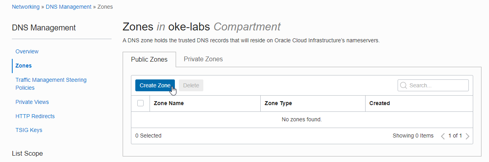
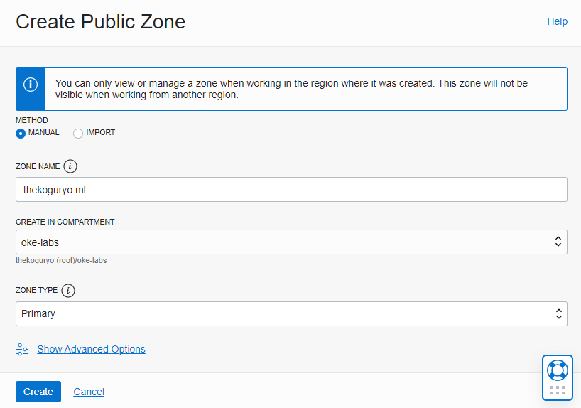
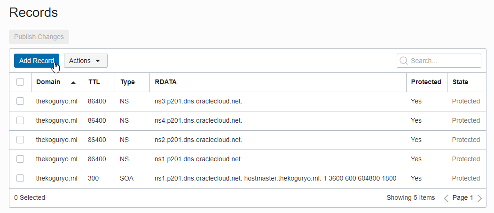
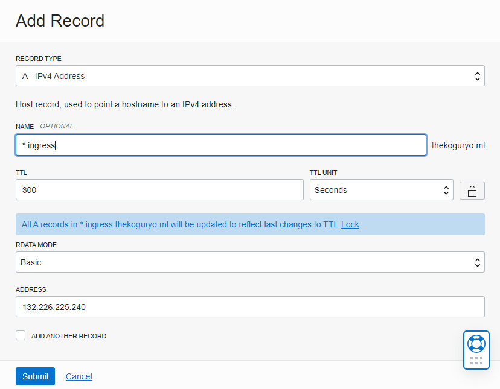
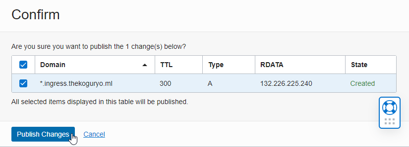
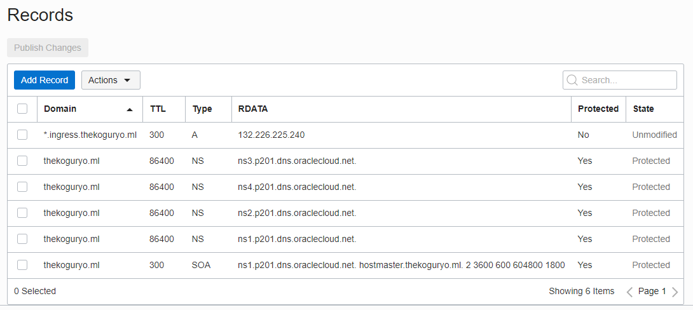
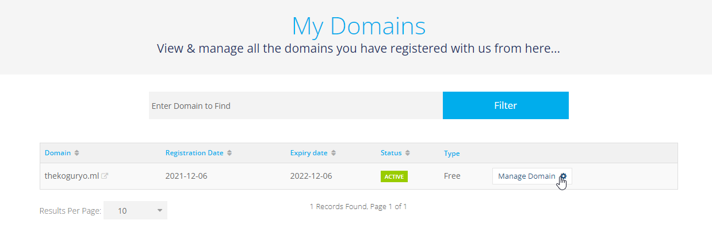
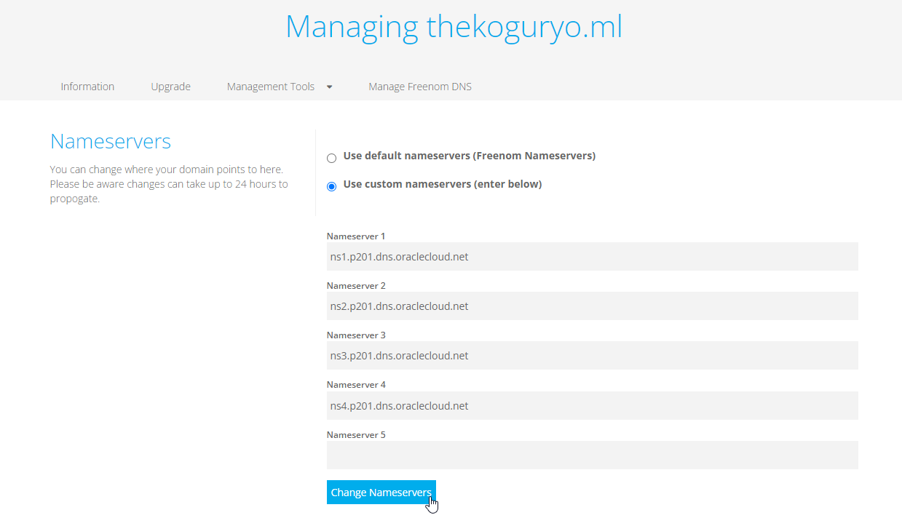
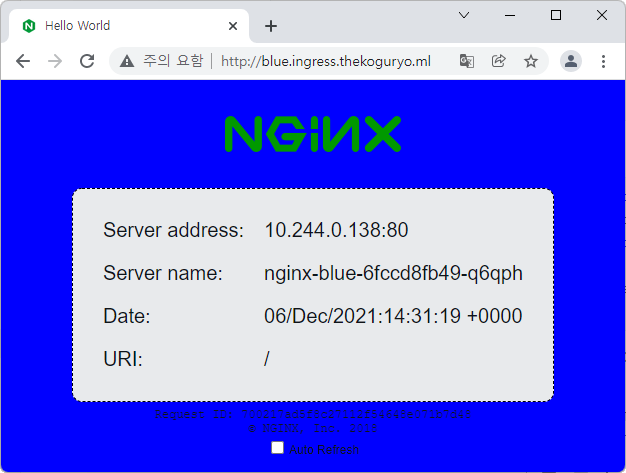
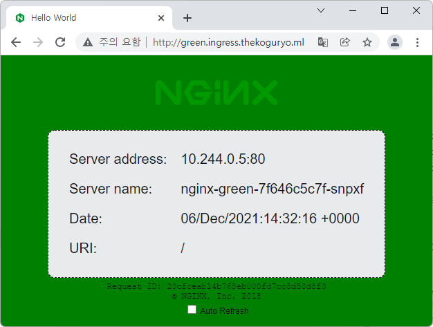

4.1.2 NGINX Ingress Controller에서 host 기반 라우팅(feat. OCI DNS)
Ingress Controller에서 도메인 네임을 기반하여 라우팅하기 위해 OCI DNS를 사용하는 방법을 확인합니다.
OCI DNS 서비스 사용하기
이미 구입한 Domain Name이 있다는 전제하에 설정하는 과정입니다. 테스트를 위해 freenom 사이트에서 발급받은 무료 Domain Name(thekoguryo.ml)을 사용하였습니다.
OCI DNS 서비스 설정
-
OCI 콘솔에 로그인합니다.
-
좌측 상단 햄버거 메뉴에서 Networking > DNS Management > Zones로 이동합니다.
-
Create Zone 클릭

-
생성정보 입력
사용한 Domain Name을 바탕으로 Zone을 생성합니다.
-
METHOD: Manual
-
ZONE NAME: 가지고 있는 Domain Name 입력
-
COMPARTMENT: 생성할 대상 Compartment
-
ZONE TYPE: Primary

-
-
Zone 내부에 NS 유형과 SOA 유형의 레코드가 생성되어 있습니다. NS는 네임 서버 레코드, SOA는 권한 시작 레코드입니다. Add Record를 클릭합니다. 
-
추가할 레코드를 입력하고 제출합니다.
-
Record Type: A - IPv4 Address
-
NAME: *.ingress
- 와일드 카드 형식으로 ingress controller가 사용할 서브 Domain Name을 입력합니다.
-
TTL: 300, 우측 자물쇠는 클릭하여 잠금 해제 후 TTL 값 입력
-
RDATA MODE: Basic
-
ADDRESS: 매핑할 IP, 여기서는 앞서 만든 nginx ingress controller의 Load Balancer의 IP 입력

-
-
반영하기 위해 Publish Change 클릭
-
확인 창이 뜨면 한번 더 Publish Change 클릭

-
레코드 추가 및 반영 완료

-
레코드 중 NS 유형인 네임서버 주소를 모두 복사합니다.
Domain Name 제공 측에 설정
이제 Domain Name을 구입한 사이트에서 설정이 필요합니다. 아래 과정은 freenom 기준 설정입니다. 구입한 사이트에서 비슷한 방식으로 설정합니다.
-
freenom 사이트에 접속하여 My Domain에서 사용할 도메인 네임 우측의 Manage Domain 클릭 
-
위쪽 Management Tools > Nameservers를 선택한 다음 **Use custom nameservers (enter below)**를 선택합니다.
-
앞서 OCI DNS Zone 에서 복사해둔 네임서버 주소를 차례대로 입력한 후 Change Nameservers 클릭 
DNS 테스트
-
nslookup 툴로 등록한 DNS를 테스트 해봅니다. 잘 등록된 것을 알 수 있습니다.
C:\>nslookup *.ingress.thekoguryo.ml 서버: kns.kornet.net Address: 168.126.63.1 권한 없는 응답: 이름: *.ingress.thekoguryo.ml Address: 132.226.225.240
HOST 기반 라우팅 테스트
HOST 이름에 따라 라우팅 서비스를 달리하는 경우입니다.
-
테스트를 위한 샘플 앱을 배포합니다. PATH 기반 라우팅 때 사용한 앱을 그대로 사용합니다.
배경 색깔이 다른 두개의 웹페이지를 배포합니다.
kubectl create deployment nginx-blue --image=thekoguryo/nginx-hello:blue kubectl expose deployment nginx-blue --name nginx-blue-svc --port 80 kubectl create deployment nginx-green --image=thekoguryo/nginx-hello:green kubectl expose deployment nginx-green --name nginx-green-svc --port 80 -
ingress 설정 YAML(
host-basic.yaml)을 작성합니다.- blue.ingress.thekoguryo.ml 요청은 nginx-blue-svc 로 라우팅
- green.ingress.thekoguryo.ml 요청은 nginx-green-svc로 라우팅
apiVersion: networking.k8s.io/v1 kind: Ingress metadata: name: ingress-host-basic annotations: kubernetes.io/ingress.class: nginx spec: rules: - host: blue.ingress.thekoguryo.ml http: paths: - path: / pathType: Prefix backend: service: name: nginx-blue-svc port: number: 80 - host: green.ingress.thekoguryo.ml http: paths: - path: / pathType: Prefix backend: service: name: nginx-green-svc port: number: 80 -
작성한
host-basic.yaml을 배포합니다.oke_admin@cloudshell:~ (ap-seoul-1)$ kubectl apply -f host-basic.yaml ingress.networking.k8s.io/ingress-host-basic created oke_admin@cloudshell:~ (ap-seoul-1)$ kubectl get ingress NAME CLASS HOSTS ADDRESS PORTS AGE ingress-host-basic <none> blue.ingress.thekoguryo.ml,green.ingress.thekoguryo.ml 80 6s -
ingress rule에서 적용한 host 명으로 각각 접속하여 결과를 확인합니다.
-
blue.ingress.thekoguryo.ml 요청

-
green.ingress.thekoguryo.ml 요청

-
와일드 카드 주소로 DNS에 등록한 Ingress Controller의 Load Balancer를 거쳐 접속한 host의 FQDN에 따라 대상 서비스에 라우팅 되는 것을 확인할 수 있습니다.
-
** 이 글은 개인으로서, 개인의 시간을 할애하여 작성된 글입니다. 글의 내용에 오류가 있을 수 있으며, 글 속의 의견은 개인적인 의견입니다. **